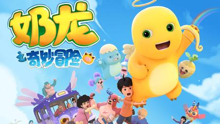
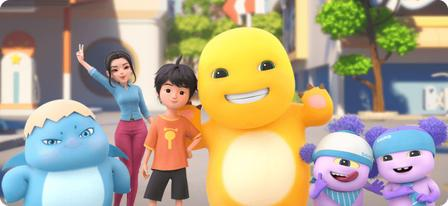
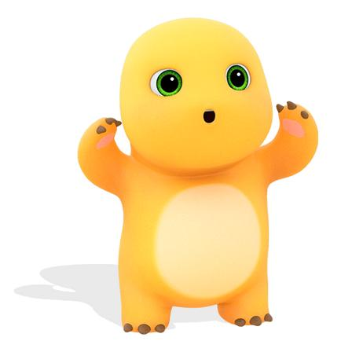

温暖治愈，乐观可爱的国产原创3D动漫IP

奶龙是第七印象文化传媒打造的原创3D动漫IP，由“龙爸”谢承恩创作。诞生初衷是为忙碌的大人和小朋友带来治愈与快乐，鼓励大家用乐观心态面对生活压力。
奶龙是一只流落地球的异星幼龙，圆滚滚黄色身体，Q弹duang duang的大肚子。他遇见热爱发明的少年小七，开启一系列搞笑温暖的冒险故事。
奶龙动画短片轻松幽默，没有激烈冲突，老少皆宜。表情包风靡全网，动画翻译成15种语言，传播到全球57个国家和地区。

奶龙心里一直有个梦想：成为村里头最大的龙！嘴上天天喊减肥，看到美食就控制不住自己。

✅《奶龙》短视频系列：全网爆火的短篇搞笑动画，也是奶龙最初出圈作品。
✅《奶龙之奇妙冒险》：长篇动画剧集，奶龙与小七开启更多奇妙冒险，获得中美电视节金天使奖。
✅《奶龙搞怪大作战》：趣味搞笑剧集，和暴暴龙上演各种欢乐对抗。
除动画外，奶龙还有漫画、绘本、海量表情包、手办盲盒、周边产品，以及和众多品牌联名。
奶龙全球粉丝超3900万，全网播放量突破千亿；微信表情包发送量超80亿次。
动画译制15种语言，海外YouTube、TikTok热度很高，海外用户自发二创。衍生品SKU超过2000个，合作品牌超200家，产品销往57个国家地区。
作品斩获第21届中美电视节“年度最佳动画剧集”金天使奖，入围亚洲电视大奖，还亮相昂西国际动画节。